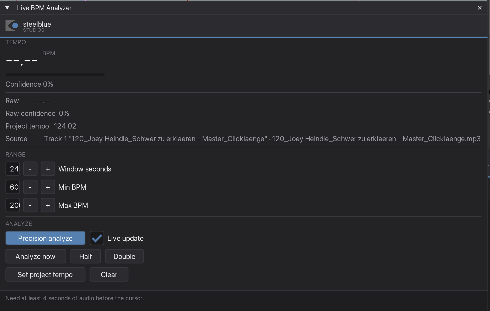

Live BPM Analyzer
Reads the real tempo of a finished song from the audio itself, to two decimal places — and sets the project tempo to it without shifting anything you have already placed.
What it is for
Your grid has to sit on the track, or every cue you place drifts. The tempo printed on a release, or reported by a DJ tool, is usually rounded to a whole number — and a TV edit is often time-compressed by a fraction of a percent on top of that. Half a BPM out over three minutes is several beats of drift by the end.
This reads the tempo out of the waveform and gives you the actual figure.
Step by step
-
Select the song item
Click the audio item in the arrange view. If nothing is selected, the plugin looks under the edit cursor, and failing that takes the only audio item in the project.
The Source line tells you what it settled on — track number, track name, take. Check that line before you trust a number; it is the difference between measuring the song and measuring something else on the timeline.
-
Start the plugin
Run Live BPM Analyzer — with the shortcut you assigned, or from the Action List. It starts reading immediately, updating as playback runs.

Freshly opened, before playback: the number is still empty, but the Source line already names the item it is going to measure. The bar under the number becomes the confidence once it reads. In the workspace it is the block at the top left instead — the number, the bar, a switch that pauses the analysis, Precision analyze, and
›››for everything on this page. -
Press Precision analyze for the real answer
Live mode looks at a short rolling window and is meant for a quick glance while the track plays. Precision analyze takes up to two minutes of audio out of the middle of the song — skipping intro and outro, where the beat is least reliable — and measures across it.
It reads that audio a piece at a time while REAPER keeps running, so the window does not freeze. A progress bar replaces the confidence bar while it works, and the button is greyed out until it finishes.
Live updating switches itself off afterwards, so the result stays on screen instead of being overwritten a moment later.
-
Set project tempo
This is safe to press on a project you have already worked in: every item's position, length and playrate is preserved. Nothing gets stretched or dragged along by the tempo change.
Reading the numbers
Confidence
Confidence answers "how sure am I about this number", not "is there music playing". It rewards a clear, steady pulse that stays put over minutes. Roughly:
| Above 70 % | A solid, steady beat. Trust the figure. |
| 40–70 % | Usable, but check it against the grid before you build on it. |
| Under 30 % | There is no reliable pulse here — a rubato passage, an ambient bed, or a section with no drums. The number is a guess. |
A produced track with vocals and pads typically lands around 80 %; a bare drum loop goes over 90 %. Noise and free-tempo material sit under 10 %, which is the point of the scale.
Half and Double
Every piece of music is equally "correct" at half and at double its tempo — 65 and 130 describe the same grid, just counted differently. The analyzer picks the musically likely reading, but for half-time material it may land an octave off. Half and Double are there to correct that in one click, and they keep every decimal place.
When a half or double reading is genuinely almost as strong, a line appears under the status telling you so. If that line stays away, the reading is unambiguous.
Raw versus displayed
The big figure is smoothed over the last few measurements; Raw is the latest one on its own. When the two drift apart while a track plays, the tempo itself is moving — a live recording, or a hand-played edit.
Good to know
Window seconds, Min and Max BPM
Leave these alone unless you have a reason. Narrowing Min/Max around a tempo you already suspect helps on difficult material — set 120 to 140 if you know it is house-ish, and the octave question disappears by itself.
It walks around timecode tracks
An LTC or SMPTE track is a square wave with a flawless period, and any tempo detector will lock onto it and report something very confident and completely useless. So a candidate whose track name, take name or item notes look like timecode — LTC, SMPTE, MTC, timecode, TC — loses against every other item, even when it is the one you selected.
If that is genuinely what you wanted measured, the status line says it has been skipped, and the Source line shows what it took instead.
What "130" on the label usually means
It usually means "about 130". If your grid drifts on a track that is supposedly a round number, measure it: released material sitting at 130.97 rather than 130.00 is entirely normal, and that difference is worth about seven beats of drift over three minutes.